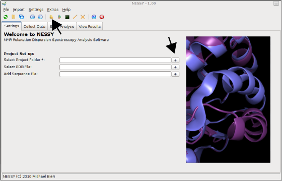
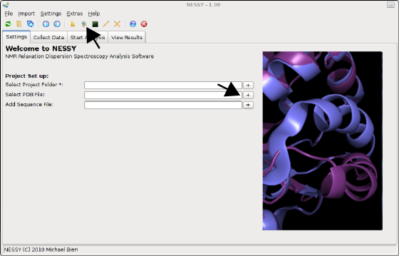
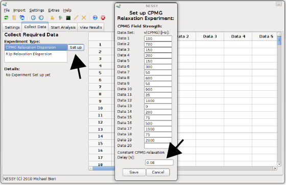
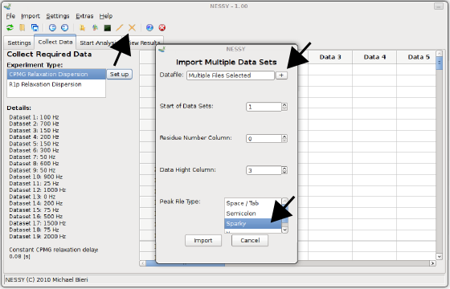
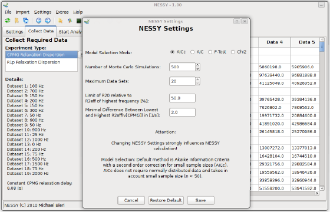
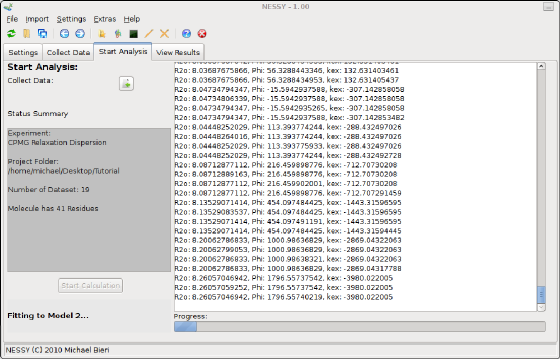
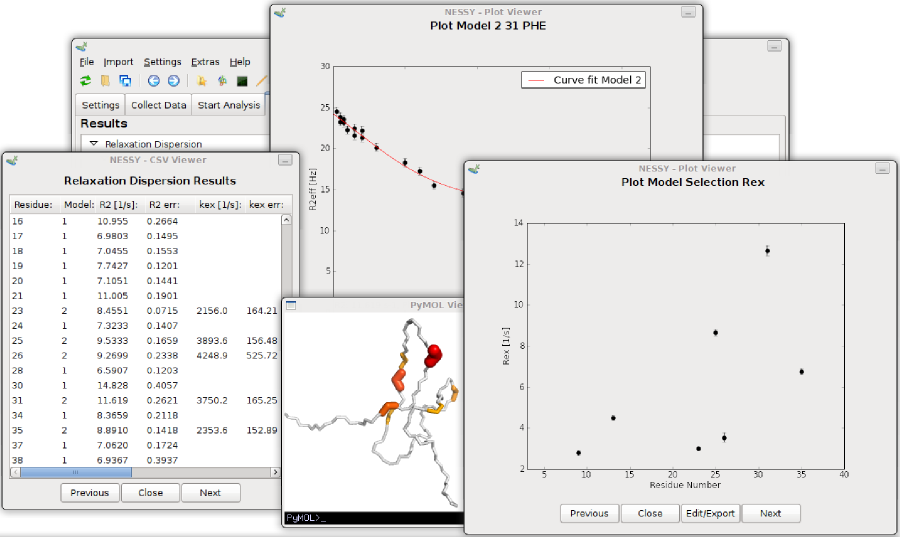

|
NESSY |
|
NMR Relaxation Dispersion Spectroscopy Analysis Software for Windows, Mac and Linux |
||

Tutorial
This turorial guides you to analyse CPMG dispersion experiment using NESSY.
Files:
Download the zipped file above and extract them on your computer. Start NESSY by typing nessy (Mac and Linux) or nessy.bat (Windows). The main interface of NESSY will pop up. Not that all functions are accessible by the toolbar and/or the menu.
Selecting the project folder
Select a folder, where NESSY saves all the files generated during analysis, such as plots, csv files, colour coded structures. This can be done either by prssing the '+' button next to the 'Select Project Folder' entry in the settings tab or on the toolbar:

Reading the protein sequence
There are two possibilities how to import protein sequence. You can either load a sequence list of the sequence will be extracted of a PDB structure file (recommended for colour coded structures). We will extract the protein sequence from a PDB file. Select the 'structure.pdb' file by either pressing the '+' button next to the 'SelectPDB File' entry in the settings tab or on the toolbar:

Collect data
Now we will collect and read our peaklists. Change to the 'Collect Data' tab and select the dispersion experiment type. Data of this tutorial were aquired as CPMG relaxation dispersion experiments. Now set up the experimental properties. There are two ways how to set up CPMGfrequencies: directly read in the vd-list (Bruker) or set the CPMG frequencies manually. We will read in the vd list provided. Open the 'Import' menu and select 'Import VD List', then select the file 'vdlist'. 'Set up CPMG Relaxation Experiment' dialog will now pop up. The CPMG frequencies are already read in. Alternatively, you can directly open this dialog using the 'Set up' button and manually fill in the frequencies. By default, the constant CPMG relaxation delay is set as 0.04 s. Changes this value to 0.08 s for this data set and press 'Save'.

Import peak lists
NESSY reads in a wide range of peak lists in different formats (space/tabulator separated, semicolon separated, common spectra viewers). Peak lists can be imported either as single or multiple files. As all our peak lists are of the same format, we will import them all together using the button in the toolbar or in the menu 'Import > Import Data from Multiple Files'. Another dialog will pop up. Load the peak lists by pressing the '+' button and select all .list files. The provided peak lists are all in Sparky format. Select 'Sparky' as Peak File Type. You don't have to change 'Residue Number Column' or 'Data Hight Column' as the defaults are set for Sparky formatted peak lists. If you have other peak lists, you can specify in which column the residue number and in wich column the intensity is located. Note that NESSY extracts residue number from your assignments (eg. G10N-H is automatically detected as residue 10). Furthermore, you can specify where NESSY should import the peak list, ie where to append. As we have an empty session so far, we will load the data starting on position 1. This can be changed at 'Start of Data Set'. Press the import button to import the peak lists.

Set up analysis
NESSY comes with default settings for automatic calculation and model selection. Nevertheless, all these parameters can be changed. To do so, open the 'NESSY Settings' dialog from the menu 'Setings > NESSY Settings'. Here, you can choose which statistical test will be used to perform model selection. We recommend to use AICc (Akaike information criteria with a second order correction for small sample size), as normally distribution of data can not be assumed. Furthermore, you can specify the number of Monte Carlo simulations for error estimation (default is 500). Two additional rejection criteria can be set: Models are rejected if error estimation of R2eff is larger than a cerain percentage of R2eff (default 50%) or if the difference between R2eff of the highest and lowest recorded frequency is smaller than a certain number (default is 2 Hz). Settings can be changed to gain a feeling for the analysis. Default settings can be restored at any time. We recommend to use the standard settings.

Start calculation
To start the calculation, go to the 'Start Analysis' tab. First, data has to be collected, Press the button next to 'Collect Data'. The project set up will be double checked and loaded. After passing the evaluation, you can start the calculation by pressing the 'Start Calculation' Button. NESSY will now automatically calculate R2eff, fit the data to the models, select the best models, perform Monte Carlo simulations and extract data.

Inspection of results
Results are summarized on the 'View Results' tab and gouped accorging to plots, colour coded structures and text files. Each result can be opened directly from the results tree.
